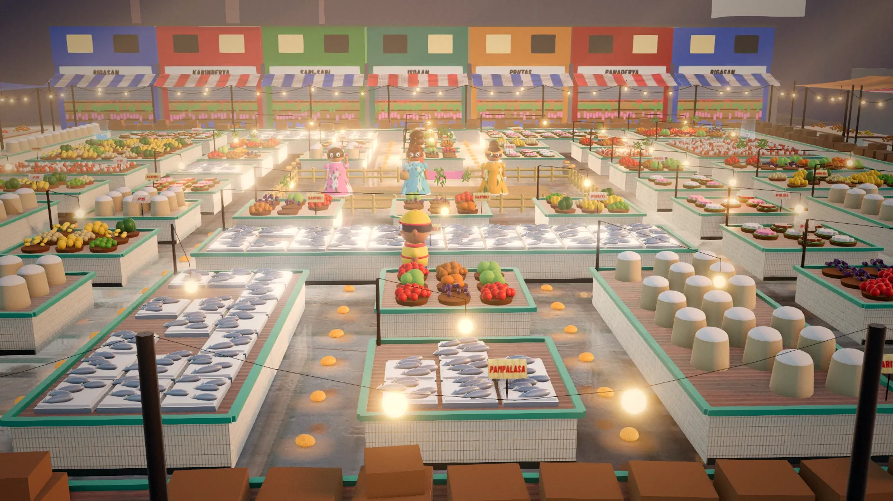

Habulan sa Palengke
The classic maze chase, Pinoy style

ArcadeKeyboard · SwipeFree, in the browser
Play Habulan sa PalengkeAbout the game
Habulan is the Filipino word for a game of chase. Here, a hungry bata (kid) in a yellow cap has slipped into the palengke (public market) at dawn, and the aisles between the stalls are lined with warm pan de sal. He wants to eat every single roll. Four tsismosa titas, aunties who never stop gossiping, want to catch him. The only thing that turns the tables is Nanay's tsinelas, the slippers every Filipino child learns to fear.
If you know the famous yellow maze-eater from the arcades, you know the idea. The mazes, the characters and the setting are all original, and the chase moves through three places: the palengke at dawn on the first two levels, the simbahan (church) plaza at night on the next two, and a neon-lit mall for the two after that. Then it starts over, faster.
How to play
Run through the maze and eat all the pan de sal to clear it. Touching a tita costs a life. In each corner sits a pair of Nanay's tsinelas. Grab one and the titas turn blue and flee, and for a short while you can catch them. The first is worth 200 points, then 400, 800 and 1,600 if you catch all four in a row. A caught tita runs back home as a pair of eyes before rejoining the chase.
Fruit shows up twice in every maze: saging (banana), mangga (mango), lanzones, balut, bibingka and even lechon in later levels, each worth more than the last. You earn an extra life every 10,000 points.
Each tita has her own way of hunting you. Tita Baby comes straight at you and gets pushier as the maze empties. Tita Lorna aims a few steps ahead of you to cut you off. Tita Chona works together with Baby to pin you from the other side. Tita Marites drifts close, then loses interest and wanders away. Every so often they all stop chasing and go back to their corners for a moment, and when they switch, they all turn around at once.
- Keyboard: arrow keys or WASD to run. P pauses, M toggles sound, C switches between a following camera and a view of the whole maze.
- Phone and tablet: swipe in the direction you want to go, or use the on-screen D-pad.
- Controller: D-pad or left stick to run, Options to pause.
Madali (easy) gives five lives, slower titas and longer-lasting tsinelas. Katamtaman (medium) and Mahirap (hard) tighten things up.
Tips
- Leave the tsinelas alone until the titas are close. Grabbing them when everyone is far away wastes their power.
- Clear the long, open aisles early and leave the pan de sal near the tsinelas for last, so you always have an escape nearby.
- Watch for the moment all four titas turn around. It is the best chance to slip past one that was blocking your way.
- Tita Lorna aims ahead of you. Turning back sharply often makes her overshoot.
- Tita Marites tends to wander off as she gets near, but she still catches you if you run straight into her.
- Fruit is worth chasing only when the path is clear. A lechon is not worth a life.
Pan de sal, the palengke and the tsismosa
Pan de sal, a soft bread roll dusted with crumbs, is the classic Filipino breakfast. In many neighborhoods someone walks to the panaderya (bakery) early in the morning to bring home a paper bag of it while it is still warm, which is why the game's palengke at dawn is full of it.
The palengke itself is the heart of a Filipino town: rows of stalls with fish on ice, heaps of vegetables, rice sold by the kilo, and plenty of talk. That talk is where the titas come in. A tsismosa is a gossip, and the word comes from tsismis, gossip. In recent years "Marites" has become popular slang for a gossip, from a play on "mare, ano ang latest?" (friend, what's the latest?), which is where Tita Marites gets her name.
And then there is the tsinelas. In countless Filipino homes, a mother reaching for her slipper was enough to make a misbehaving child behave, and it has become a running joke that almost every Filipino grew up with. In this game, for once, the kid gets to hold it.